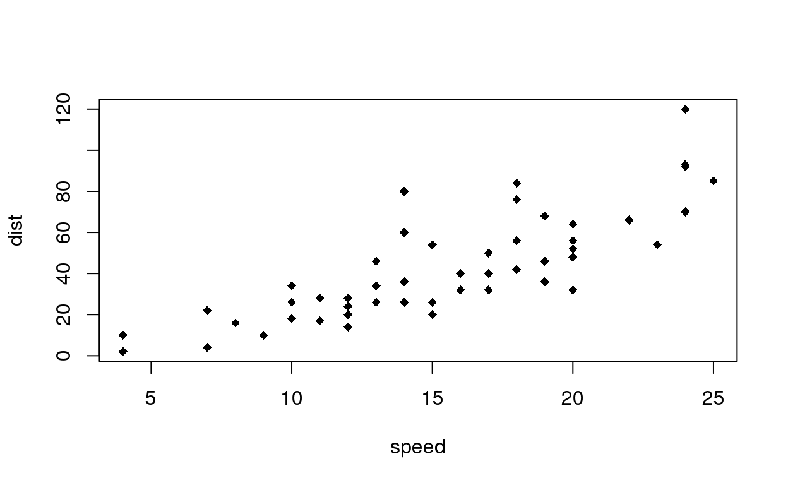
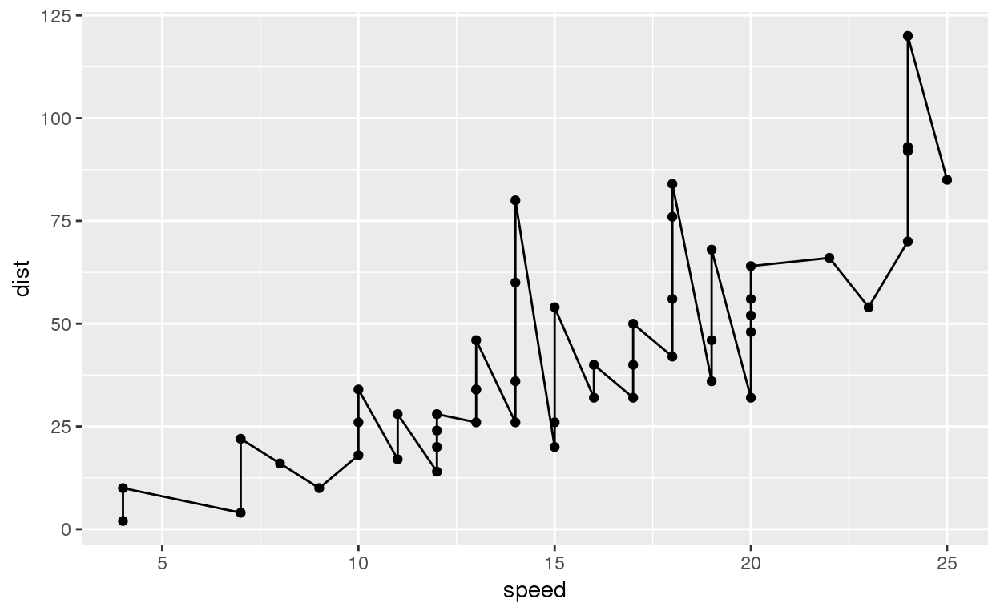

rMarkdown Series #1 - r-markdown is an extremely useful tool to generate academic articles. While you could write plain text, you are also able to insert code chunks and generate some results to enrich the file. This article will introduce the mostly used, basic but useful syntax and coding in rMarkdown.
R Markdown is a file format for making dynamic documents with R. An R Markdown document is written in markdown (a simple formatting syntax for authoring HTML, PDF, and MS Word documents) and contains chunks of embedded R code. For more details on using R Markdown see http://rmarkdown.rstudio.com.
By starting a new R Markdown file, you will firstly be asked to decide the title, author’s name, and basically the output format of the file. Take the Document option as an example. HTML format would be a great choice if you only need a presenting file, since you could switch to PDF or HTML file anytime.
When you click the Knit button on the left top of the window, a document will be generated that includes both content as well as the output of any embedded R code chunks within the document. Meanwhile, each report contains the code it needs to make its own graphs, tables, numbers, etc. The author can automatically update the report by re-knitting.
The text in an R Markdown document is written with the Markdown syntax, or precisely speaking, Pandoc’s Markdown, which is the most comprehensive one.
Generally, you could type as usual to write a plain text without any formatting, or enter two spaces to start a new paragraph.
To make the content italic, quote it by a pair of single asterisk marks (* ) or underlines(_ ), like *italic* or _italic_; to make the content bold, quote it by a pair of double asterisk marks or underlines, like **bold** or __bold__; or maybe you want to make it italic and bold at the same time, then use any combination of the corresponding symbols mentioned above, e.g., _**italic and bold**_;
To mark text as inline code, quote it by a pair of backticks, like code.
A pair of tildes (~ ) turn text to a subscript, while a pair of carets (^ ) produce a superscript. For example, H~3~PO~4~ renders H3PO4, and Cu^2+^ will render Cu2+.
Hyperlinks are created using the syntax [text](link), e.g., [RStudio](https://www.rstudio.com). The syntax for images is similar: just add an exclamation mark, e.g., . Footnotes are put inside the square brackets after a caret ^[footnotes], e.g., ^[This is a footnote.].
Section headers can be written after a number of pound signs (# ), while the more the pound signs are, the smaller the header size is. The number of pound signs could be from one to six, while the size of header with six pound signs is even smaller than that of plain text.
Unordered list items start with *, -, or +, and you can nest one list within another list by indenting the sub-list by four spaces, e.g.,
- one item
- one item
- one item
- one more item
- one more item
- one more item
The output will be:
Blockquotes are written after >, e.g.,
> "I thoroughly disapprove of duels. If a man should challenge me, I would take him kindly and forgivingly by the hand and lead him to a quiet place and kill him."
>
> --- Mark Twain
The output will be:
“I thoroughly disapprove of duels. If a man should challenge me, I would take him kindly and forgivingly by the hand and lead him to a quiet place and kill him.”
— Mark Twain
In R code chunk, the pound signs create comments. If you want to make comments in document text, use <!-- regular html comment -->. In this way, then the text quoted would not be shown in rendered document, only veiwable in the original rmd file.
In general, you’d better leave at least one empty line between adjacent but different elements, e.g., a header and a paragraph. This is to avoid ambiguity to the Markdown renderer.
Inline LaTeX equations can be written in a pair of dollar signs using the LaTeX syntax, e.g., $f(k) = {n \choose k} p^{k} (1-p)^{n-k}$ (actual output: \(f(k) = {n \choose k} p^{k} (1-p)^{n-k}\));
math expressions of the display style can be written in a pair of double dollar signs, e.g., $$f(k) = {n \choose k} p^{k} (1-p)^{n-k}$$, and the output looks like this: \[f(k) = {n \choose k} p^{k} (1-p)^{n-k}\].
You can also use math environments inside $ $ or $$ $$, e.g.,
$$\begin{array}{ccc}
x_{11} & x_{12} & x_{13}\\
x_{21} & x_{22} & x_{23}
\end{array}$$
\[\begin{array}{ccc} x_{11} & x_{12} & x_{13}\\ x_{21} & x_{22} & x_{23} \end{array}\]
$$\begin{vmatrix}a & b\\
c & d
\end{vmatrix}=ad-bc$$
\[\begin{vmatrix}a & b\\ c & d \end{vmatrix}=ad-bc\]
By clicking on the Insert button on the right top of the window, you can easily add a code chunk to the file, when there are several kinds of programming languages provided. Take an R code chunk as an example. In a code chunk, there are lots of things you could do, such as to produce any kinds of output, or manipulate a set of data.
You have fine control over all these output via chunk options, which can be provided inside the curly braces (between {r and }). For example, you can choose to hide text output via the chunk option results = 'hide', or set the figure height to 4 inches via fig.height = 4. Chunk options are separated by commas, e.g., {r, chunk-label, results='hide', fig.height=4}.
The value of a chunk option can be an arbitrary R expression, which makes chunk options extremely flexible. For example, the chunk option eval controls whether to evaluate (execute) a code chunk, and you may conditionally evaluate a chunk via a variable defined previously, e.g.,
# execute code if the date is later than a specified day
do_it = Sys.Date() > '2018-02-14'
x = rnorm(100)There are a large number of chunk options in knitr documented at https://yihui.name/knitr/options. Some most useful ones are listed below:
eval: Whether to evaluate a code chunk.
echo: Whether to echo the source code in the output document (someone may not prefer reading your smart source code but only results).
results: When set to 'hide', text output will be hidden; when set to 'asis', text output is written “as-is”, e.g., you can write out raw Markdown text from R code (like cat('**Markdown** is cool.\n')). By default, text output will be wrapped in verbatim elements (typically plain code blocks).
collapse: Whether to merge text output and source code into a single code block in the output. This is mostly cosmetic: collapse = TRUE makes the output more compact, since the R source code and its text output are displayed in a single output block. The default collapse = FALSE means R expressions and their text output are separated into different blocks.
warning, message, and error: Whether to show warnings, messages, and errors in the output document. Note that if you set error = FALSE, rmarkdown::render() will halt on error in a code chunk, and the error will be displayed in the R console. Similarly, when warning = FALSE or message = FALSE, these messages will be shown in the R console.
include: Whether to include anything from a code chunk in the output document. When include = FALSE, this whole code chunk is excluded in the output, but note that it will still be evaluated if eval = TRUE. When you are trying to set echo = FALSE, results = 'hide', warning = FALSE, and message = FALSE, chances are you simply mean a single option include = FALSE instead of suppressing different types of text output individually.
Just as like writing code and using packages in an R Script file, you are able to use any packages in a code chunk when necessary, and some packages are extremely useful here when generating such files.
For instance, if you want to generate a figure:
plot(cars, pch = 18)
library(plotly)
plot_ly(cars, x = cars$speed, y = cars$dist)
library(ggplot2)
ggplot(cars, mapping = aes(speed, dist)) +
geom_point() +
geom_path()
For another example, if you want to create tables in the file, the easiest way is to use knitr::kable(), which can create tables for HTML, PDF and Word outputs, e.g.,
knitr::kable(iris[1:5, ], caption = 'A caption')| Sepal.Length | Sepal.Width | Petal.Length | Petal.Width | Species |
|---|---|---|---|---|
| 5.1 | 3.5 | 1.4 | 0.2 | setosa |
| 4.9 | 3.0 | 1.4 | 0.2 | setosa |
| 4.7 | 3.2 | 1.3 | 0.2 | setosa |
| 4.6 | 3.1 | 1.5 | 0.2 | setosa |
| 5.0 | 3.6 | 1.4 | 0.2 | setosa |
If you are looking for more advanced control of the styling of tables, you are recommended to use the kableExtra package, which provides functions to customize the appearance of PDF and HTML tables, e.g.,
library(kableExtra)
knitr::kable(iris[1:5, ], caption = 'A caption') %>%
kable_styling(latex_options =c("striped"))| Sepal.Length | Sepal.Width | Petal.Length | Petal.Width | Species |
|---|---|---|---|---|
| 5.1 | 3.5 | 1.4 | 0.2 | setosa |
| 4.9 | 3.0 | 1.4 | 0.2 | setosa |
| 4.7 | 3.2 | 1.3 | 0.2 | setosa |
| 4.6 | 3.1 | 1.5 | 0.2 | setosa |
| 5.0 | 3.6 | 1.4 | 0.2 | setosa |